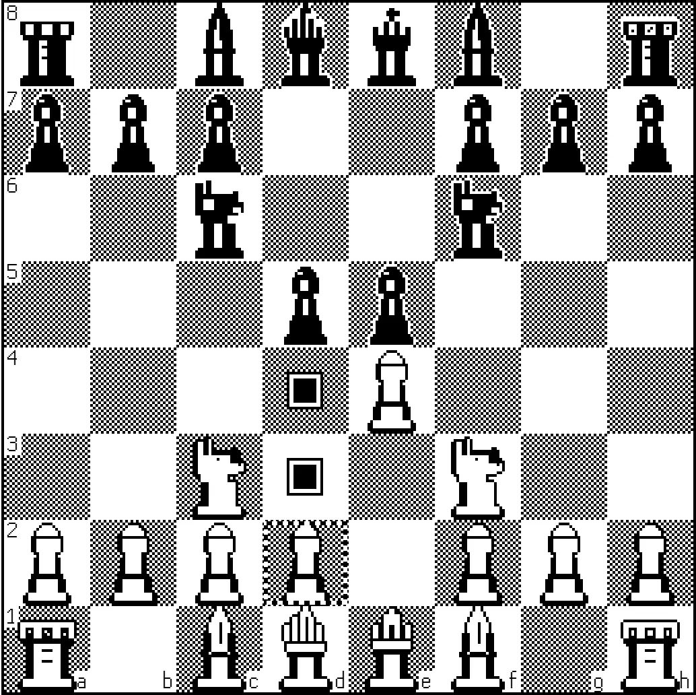

cream soda edition · three difficulty levels · optional clock
Chess in the arcade's cream soda edition, in pixel art on a two-colour window system from the mid 1980s, vanilla and dark caramel, where a mid tone is a dither.
Play the computer at easy, medium or hard, with no clock or a blitz, rapid or classical one, or play a friend online with chat. Moves are kept in algebraic notation.
pipx install magmacrunch-chessversion by magmacrunch media
cheapness impact factor 1.1